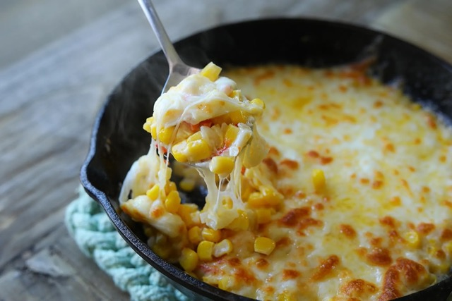

Korean Corn Cheese

A Korean dish usually served on the side at Korean BBQ restaurants.
Ingredients
- 15 oz canned corn, drained
- 3 tbsp mayonnaise
- 1 tsp sugar
- 1/4 tsp salt
- pinch of black pepper
- 1/4 medium size onion, finely chopped
- 1 red chili, finely chopped
- 1 tbsp unsalted butter
- 1/3 to 1/2 cup shredded mozzarella cheese
Steps
- Combine corn, mayonnaise, sugar, salt, black pepper, onion and chili in a mixing bowl.
- Heat 8” cast iron pan or small oven proof skillet over medium high heat and add butter. Let the butter melt completely and bubble. Add the corn mixture and sauté for 2 to 3 minutes. Spread evenly on the pan and cover the corn with mozzarella cheese.
- Place in the top rack of the oven and high broil for 2 to 3 minutes. If you don’t have a broiler/oven, just cover the pan and let the cheese melt all the way. Enjoy while it’s hot and cheesy!
Source: Seonkyoung Longest